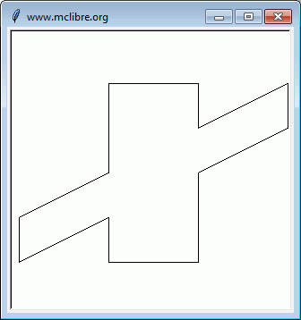
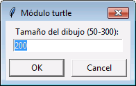
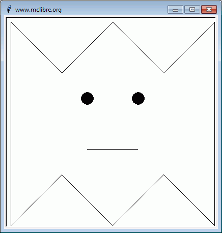
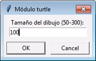
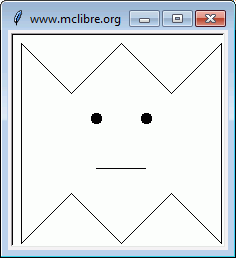

Escriba un programa que pida las coordenadas de dos puntos y escriba la ecuación de la recta que pasa por ellos.
ECUACIÓN DE RECTA Escriba la abcisa del primer punto: 3 Escriba la ordenada del primer punto: 3 Escriba la abcisa del segundo punto: 5 Escriba la ordenada del segundo punto: 5 La ecuación de la recta es y = 1.0 * x
ECUACIÓN DE RECTA Escriba la abcisa del primer punto: 4 Escriba la ordenada del primer punto: 5 Escriba la abcisa del segundo punto: 4 Escriba la ordenada del segundo punto: 7 La ecuación de la recta es x = 4.0
ECUACIÓN DE RECTA Escriba la abcisa del primer punto: 5 Escriba la ordenada del primer punto: 6 Escriba la abcisa del segundo punto: 2 Escriba la ordenada del segundo punto: 6 La ecuación de la recta es y = 6.0
ECUACIÓN DE RECTA Escriba la abcisa del primer punto: 3 Escriba la ordenada del primer punto: 4 Escriba la abcisa del segundo punto: 3 Escriba la ordenada del segundo punto: 4 Ha escrito el mismo punto dos veces
ECUACIÓN DE RECTA Escriba la abcisa del primer punto: 3 Escriba la ordenada del primer punto: 5 Escriba la abcisa del segundo punto: 6 Escriba la ordenada del segundo punto: 6 La ecuación de la recta es y = 0.3333333333333333 * x + 4.0
ECUACIÓN DE RECTA Escriba la abcisa del primer punto: 6 Escriba la ordenada del primer punto: 1 Escriba la abcisa del segundo punto: 9 Escriba la ordenada del segundo punto: 3 La ecuación de la recta es y = 0.6666666666666666 * x -3.0
Escriba un programa que genere el siguiente dibujo. La anchura del dibujo es 300 px y la altura 200px.

Escriba un programa que genere el siguiente dibujo. La ventana debe ajustarse automáticamente al tamaño solicitado por el usuario.
 
 